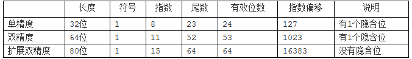

前言
有一天，我的朋友找到我，问了一件很有趣的事儿。
“七八个两位小数的double类型，相加会有精度丢失的问题吗？整数部分相加不超过一万。”
我凭着以往的经验告诉他应该不会。
我朋友给了我一张非常有趣的截图。
我写了代码试了下，还真的是这样的，所以我打算好好看看计算机中浮点数相关的东西。因为在工作中也经常会遇到类似的疑惑。总是感觉float，double等类型似乎非常不稳定，在小数点后若干位总是给出奇怪的结果。
于是就有了这篇文章。
十进制转二进制小数
学习浮点数之前接触的第一个概念是早被遗忘了的十进制转二进制小数。
转换时，整数部分应该按正常的转换过程走，也就是除以2再取余数，直到原本的数变为0，将取得的所有结果反写。如：
6/2=3..0
3/2=1..1
1/2=0..1
从下向上写为110 即十进制6等于二进制110
小数部分采用抛弃整数部分，小数部分乘以2取整数部分，然后重复此步骤直到小数部分等于0或者某些特殊情况出现。将取得的结果正写。我们先看普通的情况：
0.125*2=0.25 0
0.25*2=0.5 0
0.5*2=1.0 1
从上向下写为001，即十进制0.125等于二进制0.001
因此，十进制6.125等于二进制110.001
那什么是特殊情况呢？比如说0.58这个数字，按上述规律去运算的话，结果如下：
0.58*2=1.16
0.16*2=0.32
0.32*2=0.64
0.64*2=1.28
0.28*2=0.46
0.46*2=0.92
0.92*2=1.84
0.84*2=1.68
0.68*2=1.36
0.36*2=0.72
0.72*2=1.44
0.44*2=0.88
0.88*2=1.76
0.76*2=1.52
0.52*2=1.04
0.04*2=0.08
0.08*2=0.16 陷入0.16*2(开头运算后的第二步)后的循环。
因此最终这个数字会是0.10010011101011100不断循环下去的二进制。
也就是说，按照这个规则，二进制无法精准的表达0.58这个数字，只能不断地近似模拟。那么，浮点数是如何解决这件事儿的呢？
浮点数
浮点数是目前比较通用的计算机中关于小数的表示办法。
根据IEEE754标准（目前比较常用的标准）规定，浮点数由“符号”、“指数”和“尾数”三部分构成：
以及各个部分所占位数按照类型不同占用的位数按下图所示：

拿单精度浮点来说，公式化的表现形式是这样的：$±1.f*2^{E−127}$。其中$±$对应符号位，$f$为尾数部分，$E$为指数部分。127对应指数偏移。
用上文中提到的6.125来举个例子：
6.125(10)=110.001(2)
令110.001的小数点左移两位，可表示为$1.10001*2^2$。
因此符号位为0，尾数部分为10001，指数部分取float的指数偏移，也就是127作为参数，则可得E-127=2，E=129，转二进制也就是1000001。
所以6.125采用单精度float类型浮点数，最后在计算机中的二进制结果应该是：
| 符号位1位 | 指数部分8位 | 尾数部分23位 |
|---|---|---|
| 0 | 01000001 | 00000000000000000010001 |
其中加粗部分为补的0。
大家可以注意到，在IEEE规定中有个隐含位的概念，隐含位主要是指转换成公式化的表现形式后，$±1.f*2^{E−127}$这个公式中最前面那个1。这就是隐含位。因此所有有隐含位的数字类型，都应该将小数点移动到可令整数部分为1的地方。举个简单的例子。
0.5(10) = 0.1(2) = $1.0*2^{-1}$ 这里是将小数点右移了一位，好使整数部分为1。
因此可以看到有隐含位的浮点类型通常有效位数会比尾数位数多一位。
刚才提到了有效位数，有效位数就是计算机可表达的位数。超出有效位数的部分在浮点数这种表达方式中会被舍去。比如上文中说到的0.58，我们来看一下0.58转浮点数的过程
0.58(10) = 0.10010011101011100….(2) 循环部分为0010011101011100这组数据。若用float，也就是32位单精度浮点来表示的话，尾数部分只能取到23位，23位后的将被丢弃。也就是1.00100111010111000010011101011100…，加粗部分为会被丢弃的尾数。所以实际的表示将会是$1.00100111010111000010011*2^{-1}$，最终在计算机中的二进制表示如下表
| 符号位1位 | 指数部分8位 | 尾数部分23位 |
|---|---|---|
| 0 | 01111110 | 00100111010111000010011 |
但需要注意的是，此时这个数字并不等于0.58，他只是对于0.58的近似。浮点数也并没有解决这个问题，只是简单粗暴的丢弃了无法表示的部分。这就是为什么0.58赋值后在调试中查看对应的值会变为0.579999999999999999993类似这种形式数字的原因。
额外提一下，定点数也无法准确表示小数，定点数只不过是将32位人工的切分开，做好约定。如约定前16位是整数，后16位是小数这样。由于最终仍采用二进制位存储，因此仍然无法准确的表示小数。
精确的小数表示 Decimal
通常来说我们不用太关心浮点数小数点后十几位的数据，直接四舍五入也可以解决。但是在财务计算中，任何的误差都是不被容忍的。所以我们仍需解决小数的精确表示问题。而根据前文可得出，之所以会出现无法精确表示的问题，主要是因为我们试图将小数转换为二进制之后再存储。
因此一个可行的解决办法是直接用4bit来表示一个十进制数字，直接以十进制的形式存储这些4bit块到系统中。这样虽然会会造成bit位可表示范围的浪费（一个标准4bit应该可以表示0~15），但得到了精确地小数表示方法。
在C#中，这种实现的关键字是Decimal 。具体的实现原理不做详细研究，不在这里讨论。
一些额外的趣事
在看完了上述的文章后，你能预测下面这组C#代码的输出吗？
1 | float a = 0.58f; |
先看输出结果
1.16
0.58
57
115
其实按照之前的想法，结果应该是a+b = 1.159999999999X, a = 0.5799999999999X。事实上如果打开断点调试直接查看变量的值，结果是这样的，但在输出后，0.57999999999999X自动变成了0.58。我也因为这个输出以为C#内部暗搓搓的做了一些事情。而实际上我推测问题出在了float.tostring 这个函数上，他应该有做一些自动转换使得float本身更加具有可读性。但具体是什么，没有仔细的研究了。